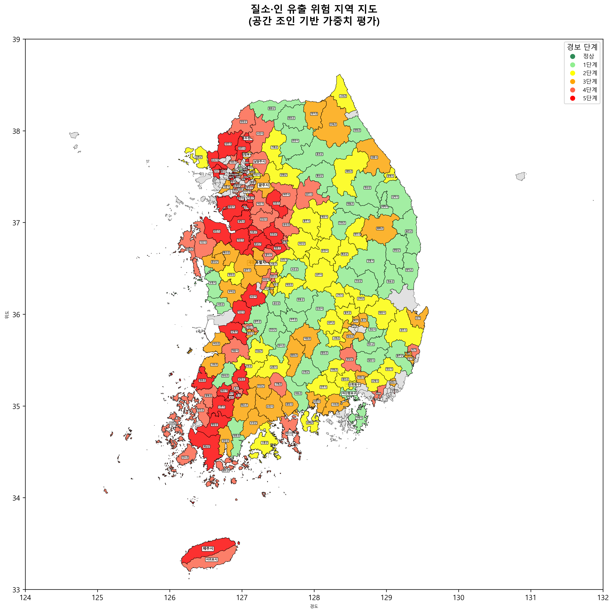

📊 전국 수질 평가 지도

📋 경보 단계별 색상 구분
1단계 (0-20%): 수질 우수
2단계 (20-40%): 수질 양호
3단계 (40-60%): 수질 보통
4단계 (60-80%): 수질 나쁨
5단계 (80-100%): 수질 매우 나쁨
🔬 시스템 개요
- 데이터 소스: 환경부 수질 DB API (국립환경과학원)
- 평가 항목: Tp(총인) 99% + Tn(총질소) 1% 가중치 적용
- 평가 방식: 백분위 기반 5단계 분류
- 지도 데이터: 전국 시군구 행정구역 경계
- 시각화: GeoPandas 기반 지도 생성
📈 평가 알고리즘
- 가중 평균 공식: (Tp × 0.99) + (Tn × 0.01)
- 백분위 계산: 전체 지역 중 상대적 순위
- 5단계 분류: 20%씩 균등 분할
- 색상 매핑: 초록 → 연초록 → 노랑 → 주황 → 빨강
🌐 기술 스택
- 데이터 수집: Python Requests, 환경부 API
- 지리 데이터: GeoPandas, Shapefile
- 시각화: Matplotlib, 지도 생성
- 데이터 처리: Pandas, NumPy
- 웹 배포: GitHub Pages, Static Site